출처: Calculus, 9, en · 인쇄본 쪽 676, 677, 678, 679 / PDF 쪽 713, 714, 715, 716 · 검증 완료 25 / 전체 25문항
공개 범위
전체 25문항과 모든 소문항.
Published scope
All 25 exercises and every subpart.
EXERCISE 1인구 성장 모델Population growth modelsExercise 1 · p. 676 · PDF p. 713개념 보기 · Concept
한국어
문제 요약
\(P'=0.04P(1-P/1200),\ P(0)=60\)에서 (a) 수용력과 성장계수, (b) 해, (c) 십 주 뒤 인구를 구하라.
힌트. 평형과 변수분리 해를 이용하고 단위를 일치시킨다.
해설.
표준형 \(P'=kP(1-P/M)\)과 계수를 비교한다.
\(P=M/(1+Ae^{-kt}),\quad A=M/P(0)-1\)에 초기값을 넣고 시간을 대입한다.
최종 답. \(M=1200,\quad k=0.04;\quad P(t)=\frac{1200}{1+19e^{-0.04t}};\quad P(10)\approx87.361163\)
검산·주의점. 직접 미분과 초기값을 확인했다. 인구는 초기값과 수용력 사이에 있다.
English
Problem summary
For \(P'=0.04P(1-P/1200),\ P(0)=60\), find (a) carrying capacity and growth coefficient, (b) the solution, and (c) the ten-week population.
Hint. Use equilibria and separated solutions, keeping units consistent.
Solution.
Compare coefficients with \(P'=kP(1-P/M)\).
\(P=M/(1+Ae^{-kt}),\quad A=M/P(0)-1\) uses the initial value and requested time.
Final answer. \(M=1200,\quad k=0.04;\quad P(t)=\frac{1200}{1+19e^{-0.04t}};\quad P(10)\approx87.361163\)
Check and conditions. Differentiation and initial values check; the population stays between its initial value and carrying capacity.
EXERCISE 2인구 성장 모델Population growth modelsExercise 2 · p. 676 · PDF p. 713개념 보기 · Concept
한국어
문제 요약
\(P'=0.02P-0.0004P^2,\ P(0)=40\)에서 (a) 수용력과 성장계수, (b) 해, (c) 십 주 뒤 인구를 구하라.
힌트. 평형과 변수분리 해를 이용하고 단위를 일치시킨다.
해설.
표준형 \(P'=kP(1-P/M)\)과 계수를 비교한다.
\(P=M/(1+Ae^{-kt}),\quad A=M/P(0)-1\)에 초기값을 넣고 시간을 대입한다.
최종 답. \(M=50,\quad k=0.02;\quad P(t)=\frac{50}{1+0.25e^{-0.02t}};\quad P(10)\approx41.504705\)
검산·주의점. 직접 미분과 초기값을 확인했다. 인구는 초기값과 수용력 사이에 있다.
English
Problem summary
For \(P'=0.02P-0.0004P^2,\ P(0)=40\), find (a) carrying capacity and growth coefficient, (b) the solution, and (c) the ten-week population.
Hint. Use equilibria and separated solutions, keeping units consistent.
Solution.
Compare coefficients with \(P'=kP(1-P/M)\).
\(P=M/(1+Ae^{-kt}),\quad A=M/P(0)-1\) uses the initial value and requested time.
Final answer. \(M=50,\quad k=0.02;\quad P(t)=\frac{50}{1+0.25e^{-0.02t}};\quad P(10)\approx41.504705\)
Check and conditions. Differentiation and initial values check; the population stays between its initial value and carrying capacity.
EXERCISE 3인구 성장 모델Population growth modelsExercise 3 · p. 676 · PDF p. 713개념 보기 · Concept
한국어
문제 요약
\(P'=0.05P-0.0005P^2\)의 (a) 수용력·계수, (b) 작은 기울기·최대 기울기·증감, (c) \(P(0)=20,40,60,80,120,140\)의 그래프와 변곡점, (d) 평형해와의 관계를 설명하라.
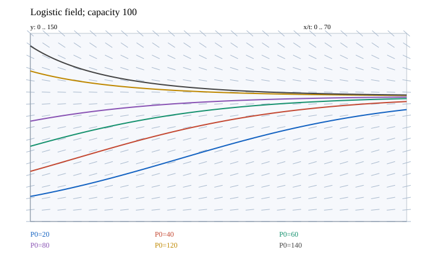
자체 계산 그림. 수치 곡선에는 4차 Runge–Kutta 방법을 사용했다.
힌트. 평형과 변수분리 해를 이용하고 단위를 일치시킨다.
해설.
수용력은 백이고 영과 백 근처에서 기울기가 작다. 오십에서 증가율이 최대이며 값은 일점이오이다.
백 아래에서는 증가하고 위에서는 감소하며 모든 양의 초기값은 백으로 수렴한다. 이십·사십의 곡선만 양의 시간에 오십을 지나 변곡한다. 육십·팔십은 아래로 오목, 백이십·백사십은 위로 볼록이다.
최종 답. \(M=100,\ k=0.05;\quad P(t)=100/[1+(100/P_0-1)e^{-0.05t}];\quad P_{eq}=0,100;\quad P_{infl}=50\)
검산·주의점. 평형해를 가로지르지 않으며 이계 도함수의 부호가 서술한 오목성을 준다.
English
Problem summary
For \(P'=0.05P-0.0005P^2\), give (a) capacity and coefficient, (b) small and maximal slopes and monotonicity, (c) curves and inflections for \(P(0)=20,40,60,80,120,140\), and (d) their relation to equilibria.
Original computed figure. Numerical solution curves use fourth-order Runge–Kutta integration.
Hint. Use equilibria and separated solutions, keeping units consistent.
Solution.
Capacity is one hundred; slopes are small near zero and one hundred. The maximal rate is 1.25 at fifty.
Below one hundred solutions increase; above it they decrease, all tending to one hundred. Only the twenty and forty curves cross fifty and inflect at positive times. The sixty and eighty curves are concave down; the 120 and 140 curves are convex.
Final answer. \(M=100,\ k=0.05;\quad P(t)=100/[1+(100/P_0-1)e^{-0.05t}];\quad P_{eq}=0,100;\quad P_{infl}=50\)
Check and conditions. Solutions cannot cross equilibria; the second derivative gives the stated concavities.
EXERCISE 4인구 성장 모델Population growth modelsExercise 4 · p. 676 · PDF p. 713개념 보기 · Concept
한국어
문제 요약
수용력 \(M=6000\), 연 성장계수 \(k=0.0015\)의 (a) 방정식, (b) 방향장, (c) \(P_0=1000,2000,4000,8000\)인 해와 오목성, (d) 초기값 천과 \(h=1\)의 오십 년 오일러값, (e) 정확해와 비교, (f) 해의 그래프를 구하라.
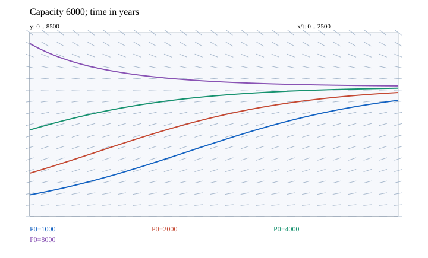
자체 계산 그림. 수치 곡선에는 4차 Runge–Kutta 방법을 사용했다.
힌트. 평형과 변수분리 해를 이용하고 단위를 일치시킨다.
해설.
\(P^{\prime}=0.0015P(1-P/6000)\)은 수용력 아래에서 증가하고 위에서 감소한다. 삼천에서 변곡하며 초기값 천과 이천은 이를 향해 처음 위로 볼록하게 증가한다.
초기값 사천은 아래로 오목하며 팔천은 위로 볼록하게 감소한다. 오일러 갱신은 \(P_{n+1}=P_n+0.0015P_n(1-P_n/6000)\).
최종 답. \(P(t)=6000/(1+5e^{-0.0015t});\quad P_E(50)=1064.039476;\quad P(50)=1064.071763;\quad E=0.032287\)
검산·주의점. 변곡점은 인구 증가율이 최대인 지점이다. 오십 년 구간에서는 초기값 천의 해가 위로 볼록하여 오일러 값은 과소이다.
English
Problem summary
With capacity \(M=6000\) and annual coefficient \(k=0.0015\), find (a) the equation, (b) field, (c) curves and concavity for \(P_0=1000,2000,4000,8000\), (d) the fifty-year Euler estimate from one thousand with \(h=1\), (e) the exact solution and comparison, and (f) its graph.
Original computed figure. Numerical solution curves use fourth-order Runge–Kutta integration.
Hint. Use equilibria and separated solutions, keeping units consistent.
Solution.
\(P^{\prime}=0.0015P(1-P/6000)\) increases below capacity and decreases above it. Inflection occurs at three thousand; the one-thousand and two-thousand curves start convex.
The four-thousand curve is concave down; the eight-thousand curve decreases convexly. Euler updates use \(P_{n+1}=P_n+0.0015P_n(1-P_n/6000)\).
Final answer. \(P(t)=6000/(1+5e^{-0.0015t});\quad P_E(50)=1064.039476;\quad P(50)=1064.071763;\quad E=0.032287\)
Check and conditions. An inflection marks maximal growth rate. The solution from one thousand remains convex over fifty years, so Euler underestimates.
EXERCISE 5인구 성장 모델Population growth modelsExercise 5 · p. 677 · PDF p. 714개념 보기 · Concept
한국어
문제 요약
물고기 생체량이 \(y^{\prime}=0.71y(1-y/(8\times10^7)),\quad y(0)=2\times10^7\)을 따른다. (a) 일 년 뒤 질량과 (b) \(4\times10^7\)킬로그램까지의 시간을 구하라.
힌트. 평형과 변수분리 해를 이용하고 단위를 일치시킨다.
해설.
\(y=8\times10^7/(1+3e^{-0.71t})\)에 시간을 넣는다.
수용력의 절반에서는 분모가 이이므로 \(3e^{-0.71t}=1\).
최종 답. \(y(1)\approx32324112.68\ \mathrm{kg};\quad t=\ln3/0.71\approx1.547341\ \mathrm{yr}\)
검산·주의점. 질량이 증가하여 수용력 아래에 머무는지 확인했다.
English
Problem summary
Fish biomass satisfies \(y^{\prime}=0.71y(1-y/(8\times10^7)),\quad y(0)=2\times10^7\). Find (a) mass after one year and (b) time to \(4\times10^7\) kilograms.
Hint. Use equilibria and separated solutions, keeping units consistent.
Solution.
\(y=8\times10^7/(1+3e^{-0.71t})\) gives the requested mass.
At half-capacity the denominator is two, giving \(3e^{-0.71t}=1\).
Final answer. \(y(1)\approx32324112.68\ \mathrm{kg};\quad t=\ln3/0.71\approx1.547341\ \mathrm{yr}\)
Check and conditions. The biomass increases and remains below capacity.
EXERCISE 6인구 성장 모델Population growth modelsExercise 6 · p. 677 · PDF p. 714개념 보기 · Concept
한국어
문제 요약
\(P'=0.4P-0.001P^2,\ P(0)=50\)의 (a) 수용력, (b) 초기 증가율, (c) 수용력 절반까지의 시간을 구하라.
A logistic population starts at one thousand, has capacity ten thousand, and reaches 2,500 after one year. Find the population three additional years later.
Hint. Use equilibria and separated solutions, keeping units consistent.
Check and conditions. Substitution at years one and four checks the time origin.
EXERCISE 8인구 성장 모델Population growth modelsExercise 8 · p. 677 · PDF p. 714개념 보기 · Concept
한국어
문제 요약
효모 관측 \(\begin{array}{c|rrrrrrrrrr}t&0&2&4&6&8&10&12&14&16&18\\P&18&39&80&171&336&509&597&640&664&672\end{array}\)에서 (a) 산점도와 수용력, (b) 초기 상대성장률, (c) 지수·로지스틱 모델, (d) 표·그래프 비교, (e) 칠 시간 값을 구하라.
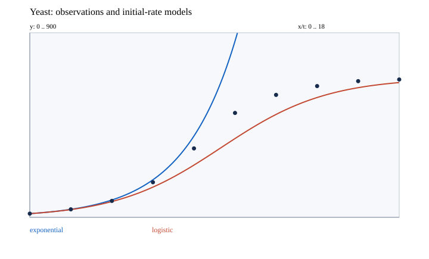
자체 계산 그림. 수치 곡선에는 4차 Runge–Kutta 방법을 사용했다.
힌트. 평형과 변수분리 해를 이용하고 단위를 일치시킨다.
해설.
마지막 값들이 약 육백팔십에 가까워지므로 이를 수용력으로 추정한다. 첫 두 관측의 로그 비를 시간차로 나눈 평균 상대성장률을 초기값의 추정으로 사용한다.
\(k\approx\ln(39/18)/2=0.386594944\). 이 추정 선택에 따라 모델은 유일하지 않다. \(\begin{array}{r|r|r|r}t&\mathrm{observed}&P_E&P_L\\0&18&18.00&18.00\\2&39&39.00&37.83\\4&80&84.50&76.97\\6&171&183.08&147.32\\8&336&396.68&254.79\\10&509&859.47&384.13\\12&597&1862.19&501.66\\14&640&4034.76&584.16\\16&664&8741.97&632.13\\18&672&18940.94&657.04\end{array}\)
최종 답. \(P_E(t)=18e^{0.386594944t};\quad P_L(t)=680/(1+(662/18)e^{-0.386594944t})\); \(P_L(7)\approx196.731969\)
검산·주의점. 지수모델은 후반에 크게 과대예측한다. 이 초기 성장률 기반 로지스틱은 중반을 과소예측하지만 포화 현상을 표현한다. 모든 점 회귀를 한 결과로 오인하지 않아야 한다.
English
Problem summary
For yeast observations \(\begin{array}{c|rrrrrrrrrr}t&0&2&4&6&8&10&12&14&16&18\\P&18&39&80&171&336&509&597&640&664&672\end{array}\), find (a) a scatter plot and capacity estimate, (b) initial relative growth, (c) exponential and logistic models, (d) a table and plot comparison, and (e) the seven-hour estimate.
Original computed figure. Numerical solution curves use fourth-order Runge–Kutta integration.
Hint. Use equilibria and separated solutions, keeping units consistent.
Solution.
The last values approach about 680, used as the estimated capacity. The log ratio of the first two observations divided by elapsed time estimates the initial relative growth rate.
\(k\approx\ln(39/18)/2=0.386594944\). Models are not unique because this is an estimation choice. \(\begin{array}{r|r|r|r}t&\mathrm{observed}&P_E&P_L\\0&18&18.00&18.00\\2&39&39.00&37.83\\4&80&84.50&76.97\\6&171&183.08&147.32\\8&336&396.68&254.79\\10&509&859.47&384.13\\12&597&1862.19&501.66\\14&640&4034.76&584.16\\16&664&8741.97&632.13\\18&672&18940.94&657.04\end{array}\)
Final answer. \(P_E(t)=18e^{0.386594944t};\quad P_L(t)=680/(1+(662/18)e^{-0.386594944t})\); \(P_L(7)\approx196.731969\)
Check and conditions. The exponential greatly overpredicts later values. This initial-rate logistic model underpredicts midrange growth but captures saturation; it is not an all-data regression.
EXERCISE 9인구 성장 모델Population growth modelsExercise 9 · p. 677 · PDF p. 714개념 보기 · Concept
한국어
문제 요약
주어진 교재 자료에서 이천 년 인구는 육십일 억, 연 출생은 삼천오백만–사천만, 사망은 천오백만–이천만이다. 수용력 이백억으로 (a) 로지스틱 모델, (b) 이천십 년 추정과 관측 육십구 억 비교, (c) 이천백·이천오백 년 예측을 구하라.
힌트. 평형과 변수분리 해를 이용하고 단위를 일치시킨다.
해설.
출생과 사망 범위의 중간값 차이인 연 이천만을 사용한다. 시간은 이천 년부터의 연수, 인구는 십억 단위이다. 문제의 제안대로 순증가 상대율을 성장계수로 근사한다.
\(k\approx(0.0375-0.0175)/6.1\)를 표준해에 대입한다. 주어진 낮은 출생·사망 자료 때문에 이천십 년 관측을 상당히 과소예측한다.
최종 답. \(P^{\prime}=0.003278689P(1-P/20),\quad P(t)=20/(1+(2.278688525)e^{-0.003278689t});\quad P(10)=6.239882,\ P(100)=7.570887,\ P(500)=13.866644\)
검산·주의점. 관측 및 예측은 교재에 주어진 역사적 숫자로 계산한 모델 결과이며 현재의 인구 자료를 대체하지 않는다. 초기 증가율 근사는 정확한 보정과 구별했다.
English
Problem summary
Using the supplied textbook data, population in 2000 is 6.1 billion, annual births 35–40 million and deaths 15–20 million. With capacity twenty billion, find (a) a logistic model, (b) a 2010 estimate versus the stated 6.9 billion, and (c) predictions for 2100 and 2500.
Hint. Use equilibria and separated solutions, keeping units consistent.
Solution.
Use the difference of range midpoints, twenty million yearly. Time is years since 2000 and population is in billions. Following the question’s approximation, use the net relative increase as the logistic coefficient.
\(k\approx(0.0375-0.0175)/6.1\) is inserted into the standard solution. The supplied low vital-rate data substantially underpredict the stated 2010 observation.
Final answer. \(P^{\prime}=0.003278689P(1-P/20),\quad P(t)=20/(1+(2.278688525)e^{-0.003278689t});\quad P(10)=6.239882,\ P(100)=7.570887,\ P(500)=13.866644\)
Check and conditions. These are model calculations from the supplied historical figures. The approximate growth coefficient is distinguished from exact initial-rate calibration.
EXERCISE 10인구 성장 모델Population growth modelsExercise 10 · p. 677 · PDF p. 714개념 보기 · Concept
한국어
문제 요약
미국 인구 단위를 백만으로 두고 수용력 팔백, 이천 년 이백팔십이, 이천십 년 삼백구를 사용한다. (a) 모델, (b) 성장계수, (c) 이천백·이천이백 년 인구, (d) 오억 명을 넘는 연도를 구하라.
힌트. 평형과 변수분리 해를 이용하고 단위를 일치시킨다.
해설.
\(P(t)=800/(1+(518/282)e^{-kt})\)에 십 년 관측을 넣는다.
\(k=\tfrac1{10}\ln\frac{(800/282-1)}{(800/309-1)}\)을 사용해 원하는 시간과 인구를 계산한다.
최종 답. \(k=0.014496532;\quad P(100)=559.039150;\quad P(200)=726.519031;\quad\mathrm{year}=2000+77.183549=2077.183549\)
검산·주의점. 모델에 이천 년과 이천십 년을 넣으면 두 관측을 정확히 복원한다.
English
Problem summary
Use US population in millions with capacity eight hundred, 282 in 2000 and 309 in 2010. Find (a) the model, (b) the growth coefficient, (c) populations in 2100 and 2200, and (d) the year it exceeds five hundred million.
Hint. Use equilibria and separated solutions, keeping units consistent.
Solution.
\(P(t)=800/(1+(518/282)e^{-kt})\) is fitted to the ten-year observation.
\(k=\tfrac1{10}\ln\frac{(800/282-1)}{(800/309-1)}\) gives the requested values and threshold time.
Final answer. \(k=0.014496532;\quad P(100)=559.039150;\quad P(200)=726.519031;\quad\mathrm{year}=2000+77.183549=2077.183549\)
Check and conditions. Substituting 2000 and 2010 recovers both observations exactly.
EXERCISE 11인구 성장 모델Population growth modelsExercise 11 · p. 677 · PDF p. 714개념 보기 · Concept
한국어
문제 요약
소문 확산률이 들은 비율과 못 들은 비율의 곱에 비례한다. (a) 식, (b) 해를 구하라. (c) 천 명 마을에서 오전 여덟 시 팔십 명, 정오 오백 명이 들었다면 구백 명에 도달하는 시간을 구하라.
힌트. 평형과 변수분리 해를 이용하고 단위를 일치시킨다.
해설.
\(y^{\prime}=ky(1-y),\quad y=1/(1+Ae^{-kt})\)이고 초기 비율로 \(A=11.5\).
정오 조건으로 \(k=\ln(11.5)/4\)이며 구십 퍼센트 조건의 분모는 십분의 구의 역수이다.
최종 답. \(t_{90}=\ln(103.5)/k\approx7.598546\ \mathrm{hours\ after\ 8\ am}\); 오후 약 세 시 삼십육 분.
검산·주의점. 영과 일의 상수해도 방정식의 해이다. 초기·정오 비율을 대입 검사했다.
English
Problem summary
Rumor spread is proportional to the product of aware and unaware fractions. Find (a) the equation and (b) its solution. (c) In a town of one thousand, eighty people know at 8 am and five hundred at noon. When do nine hundred know?
Hint. Use equilibria and separated solutions, keeping units consistent.
Solution.
\(y^{\prime}=ky(1-y),\quad y=1/(1+Ae^{-kt})\) and the initial fraction give \(A=11.5\).
The noon condition gives \(k=\ln(11.5)/4\); the ninety-percent condition fixes the denominator.
Final answer. \(t_{90}=\ln(103.5)/k\approx7.598546\ \mathrm{hours\ after\ 8\ am}\); approximately 3:36 pm.
Check and conditions. Zero and one are also constant solutions. The initial and noon fractions were checked.
EXERCISE 12인구 성장 모델Population growth modelsExercise 12 · p. 677 · PDF p. 714개념 보기 · Concept
한국어
문제 요약
호수에 물고기 사백 마리를 넣었고 수용력은 만 마리이다. 첫해에 세 배가 되었다. (a) 로지스틱 인구식과 (b) 오천 마리까지 걸리는 시간을 구하라.
힌트. 평형과 변수분리 해를 이용하고 단위를 일치시킨다.
해설.
\(P=10000/(1+24e^{-kt})\)에 일 년 뒤 천이백을 대입한다.
\(e^{-k}=11/36\)이고 절반 수용력에서는 \(24e^{-kt}=1\).
최종 답. \(P(t)=\frac{10000}{1+24(11/36)^t};\quad t=\frac{\ln24}{\ln(36/11)}\approx2.680491\ \mathrm{yr}\)
검산·주의점. 첫해의 세 배 조건과 절반 수용력 조건을 각각 검증했다.
English
Problem summary
A lake starts with four hundred fish, has capacity ten thousand, and triples its fish population in the first year. Find (a) the logistic population and (b) time to five thousand.
Hint. Use equilibria and separated solutions, keeping units consistent.
Solution.
\(P=10000/(1+24e^{-kt})\) is fitted to twelve hundred after one year.
\(e^{-k}=11/36\) and half capacity requires \(24e^{-kt}=1\).
Final answer. \(P(t)=\frac{10000}{1+24(11/36)^t};\quad t=\frac{\ln24}{\ln(36/11)}\approx2.680491\ \mathrm{yr}\)
Check and conditions. The first-year tripling and half-capacity conditions both check.
EXERCISE 13인구 성장 모델Population growth modelsExercise 13 · p. 677 · PDF p. 714개념 보기 · Concept
\(P^{\prime\prime}=kP^{\prime}(1-2P/M)\)에 원래 식을 넣는다.
성장 구간에서 앞의 인자는 양수이고 마지막 인자만 수용력 절반에서 부호를 바꾼다.
최종 답. \(P^{\prime\prime}=k^2P(1-P/M)(1-2P/M);\quad P_{fast}=M/2,\quad P^{\prime}_{max}=kM/4\)
검산·주의점. 증가율을 인구의 이차함수로 보고 꼭짓점을 구해도 같은 결과이다.
English
Problem summary
For \(P^{\prime}=kP(1-P/M)\), (a) derive its second derivative and (b) prove the population of maximal growth.
Hint. Use equilibria and separated solutions, keeping units consistent.
Solution.
\(P^{\prime\prime}=kP^{\prime}(1-2P/M)\) uses the original equation.
On the growing interval the first factors are positive; the last changes sign at half capacity.
Final answer. \(P^{\prime\prime}=k^2P(1-P/M)(1-2P/M);\quad P_{fast}=M/2,\quad P^{\prime}_{max}=kM/4\)
Check and conditions. The vertex of growth rate as a quadratic in population gives the same result.
EXERCISE 14인구 성장 모델Population growth modelsExercise 14 · p. 678 · PDF p. 715개념 보기 · Concept
한국어
문제 요약
수용력을 십으로 고정한 \(P(t)=10/[1+(10/P_0-1)e^{-kt}]\)에서 초기값과 성장계수를 바꾸어 여러 곡선을 그리고 효과를 설명하라.
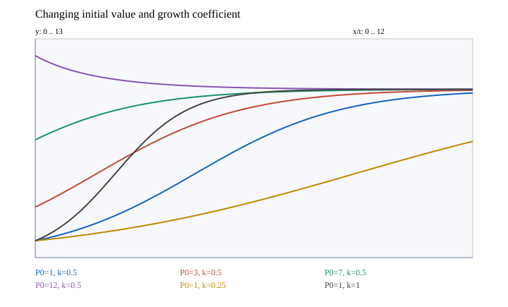
자체 계산 그림. 수치 곡선에는 4차 Runge–Kutta 방법을 사용했다.
힌트. 평형과 변수분리 해를 이용하고 단위를 일치시킨다.
해설.
같은 양의 성장계수에서 초기값이 큰 곡선은 다른 곡선보다 위에 있으며 모든 양의 초기값은 수용력에 접근한다.
성장계수를 키우면 시간축을 압축하여 평형에 더 빨리 접근한다. 수용력 아래 곡선의 변곡 시간은 \(t_i=\ln(10/P_0-1)/k\).
최종 답. 초기값은 시작 높이와 변곡 시점을, 성장계수는 시간 척도를 바꾼다.
검산·주의점. 수용력 이상에서 시작하면 감소하므로 동일한 증가곡선 설명을 적용하지 않는다.
English
Problem summary
With fixed capacity ten, plot \(P(t)=10/[1+(10/P_0-1)e^{-kt}]\) for different initial values and growth coefficients and describe their effects.
Original computed figure. Numerical solution curves use fourth-order Runge–Kutta integration.
Hint. Use equilibria and separated solutions, keeping units consistent.
Solution.
For a fixed positive growth coefficient, larger initial values produce higher curves; all positive initial values approach capacity.
Increasing the coefficient compresses time and speeds convergence. For a below-capacity curve the inflection time is \(t_i=\ln(10/P_0-1)/k\).
Final answer. The initial value changes starting height and inflection time; the coefficient changes the time scale.
Check and conditions. Curves starting above capacity decrease, so the growing-curve description does not apply there.
EXERCISE 15인구 성장 모델Population growth modelsExercise 15 · p. 678 · PDF p. 715개념 보기 · Concept
한국어
문제 요약
트리니다드 토바고의 천 명 단위 자료 \(\begin{array}{c|rrrrrrrrrr}t&0&5&10&15&20&25&30&35&40&45\\P&955&1007&1091&1189&1255&1264&1252&1237&1227&1222\end{array}\)에서 (a) 산점도, (b) 구백을 뺀 값의 로지스틱 회귀, (c) 다시 구백을 더한 모델·그래프·정확도, (d) 조건부 장기 예측을 구하라. 시간 영은 천구백칠십 년이다.
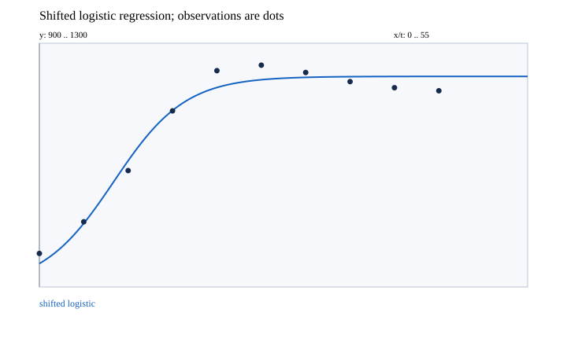
자체 계산 그림. 수치 곡선에는 4차 Runge–Kutta 방법을 사용했다.
힌트. 평형과 변수분리 해를 이용하고 단위를 일치시킨다.
해설.
이동한 관측값에 대해 원래 인구 척도의 잔차 제곱합을 최소화하는 세 매개변수 로지스틱 회귀를 수행한다.
초기 증가와 포화를 대략 표현하지만 후반 관측의 감소는 단조 증가 로지스틱으로 재현할 수 없다.
최종 답. \(P(t)=900+\frac{345.589847}{1+7.997717e^{-0.248242653t}}\); \(\mathrm{RMSE}=17.049724;\quad\lim P=900+345.589847=1245.589847\ \mathrm{thousand}\)
검산·주의점. 다른 초기 매개변수로 다시 최적화해 같은 잔차 최소값을 확인했다. 미래 해석은 모델이 계속 유효하다는 가정에 따른다.
English
Problem summary
For Trinidad and Tobago data in thousands \(\begin{array}{c|rrrrrrrrrr}t&0&5&10&15&20&25&30&35&40&45\\P&955&1007&1091&1189&1255&1264&1252&1237&1227&1222\end{array}\), find (a) a scatter plot, (b) logistic regression after subtracting nine hundred, (c) the shifted-back model, graph and fit, and (d) its conditional long-term prediction. Time zero is 1970.
Original computed figure. Numerical solution curves use fourth-order Runge–Kutta integration.
Hint. Use equilibria and separated solutions, keeping units consistent.
Solution.
Fit a three-parameter logistic by minimizing squared residuals on the population scale after shifting the data.
The curve approximates early growth and saturation but cannot reproduce the later observed decline with a monotone logistic.
Final answer. \(P(t)=900+\frac{345.589847}{1+7.997717e^{-0.248242653t}}\); \(\mathrm{RMSE}=17.049724;\quad\lim P=900+345.589847=1245.589847\ \mathrm{thousand}\)
Check and conditions. A different optimizer start confirms the same residual minimum. Extrapolation is conditional on continued model validity.
EXERCISE 16인구 성장 모델Population growth modelsExercise 16 · p. 678 · PDF p. 715개념 보기 · Concept
한국어
문제 요약
이천십 년부터의 연수와 트위터 사용자 백만 단위 자료 \(\begin{array}{c|rrrrrrr}t&0&0.5&1&1.5&2&2.5&3\\P&30&49&68&101&138&167&204\\t&3.5&4&4.5&5&5.5&6&6.5\\P&232&255&284&302&307&310&317\end{array}\)에 지수·로지스틱 모델을 적합하고 산점도와 함께 그려 적합도를 논하라.
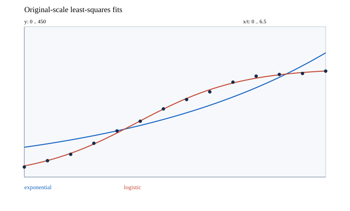
자체 계산 그림. 수치 곡선에는 4차 Runge–Kutta 방법을 사용했다.
힌트. 평형과 변수분리 해를 이용하고 단위를 일치시킨다.
해설.
두 모델 모두 관측 사용자 수 척도에서 잔차 제곱합을 최소화했다. 로그 척도 회귀와는 다른 기준임을 명시한다.
지수모델은 포화와 증가율 감소를 표현하지 못한다. 로지스틱은 두 특징을 반영하여 잔차가 훨씬 작다.
최종 답. \(P_E=89.154368e^{0.219710657t},\quad\mathrm{RMSE}_E=37.386455;\quad P_L=\frac{325.763691}{1+8.753762e^{-0.892707780t}},\quad\mathrm{RMSE}_L=3.454761\)
검산·주의점. 두 회귀를 다른 시작값으로 재검산했다. 여기서는 주어진 과거 자료의 적합만 평가한다.
English
Problem summary
Fit exponential and logistic models to years since 2010 and Twitter users in millions \(\begin{array}{c|rrrrrrr}t&0&0.5&1&1.5&2&2.5&3\\P&30&49&68&101&138&167&204\\t&3.5&4&4.5&5&5.5&6&6.5\\P&232&255&284&302&307&310&317\end{array}\). Plot both with observations and compare fit.
Original computed figure. Numerical solution curves use fourth-order Runge–Kutta integration.
Hint. Use equilibria and separated solutions, keeping units consistent.
Solution.
Both fits minimize squared residuals on the observed user-count scale, explicitly distinct from regression on logarithms.
The exponential cannot capture saturation and slowing growth. The logistic captures both and has much smaller residuals.
Final answer. \(P_E=89.154368e^{0.219710657t},\quad\mathrm{RMSE}_E=37.386455;\quad P_L=\frac{325.763691}{1+8.753762e^{-0.892707780t}},\quad\mathrm{RMSE}_L=3.454761\)
Check and conditions. Both regressions were checked from different starts; this assesses fit to the supplied historical data.
EXERCISE 17인구 성장 모델Population growth modelsExercise 17 · p. 678 · PDF p. 715개념 보기 · Concept
한국어
문제 요약
\(P^{\prime}=kP-m,\quad k=\alpha-\beta>0,\quad P(0)=P_0\)에서 (a) 해, (b) 증가 조건, (c) 일정·감소 조건을 구하라. (d) 천팔백사십칠 년 아일랜드의 인구 팔백만, 순상대증가율 연 일점육 퍼센트, 연 이민 이십일만을 대입하라.
힌트. 평형과 변수분리 해를 이용하고 단위를 일치시킨다.
해설.
평형 인구를 빼면 \((P-m/k)^{\prime}=k(P-m/k)\)가 된다.
초기 평형 차이의 부호가 성장 여부를 결정한다. 사례에서는 자연 순증가 십이만팔천보다 이민이 많다.
검산·주의점. 감소 모델은 인구가 영에 도달할 때까지 물리적으로 사용한다. 음의 인구로의 형식적 연장은 인구 해석이 없다.
English
Problem summary
For \(P^{\prime}=kP-m,\quad k=\alpha-\beta>0,\quad P(0)=P_0\), find (a) the solution, (b) growth conditions, and (c) constant or declining cases. (d) Apply population eight million, annual net relative growth 1.6 percent, and emigration 210,000 for Ireland in 1847.
Hint. Use equilibria and separated solutions, keeping units consistent.
Solution.
Subtract the equilibrium to get \((P-m/k)^{\prime}=k(P-m/k)\).
The initial difference from equilibrium determines growth. In the example, emigration exceeds the natural net increase of 128,000.
Check and conditions. The declining model is physically used only until population reaches zero; formal negative values have no population interpretation.
EXERCISE 18인구 성장 모델Population growth modelsExercise 18 · p. 678 · PDF p. 715개념 보기 · Concept
한국어
문제 요약
\(y^{\prime}=ky^{1+c},\quad k,c>0,\quad y(0)=y_0>0\)에서 (a) 해, (b) 유한 폭주시간을 구하라. (c) 지수 일점영일, 처음 두 마리, 삼 개월 뒤 열여섯 마리인 토끼 모델의 폭주시간을 구하라.
괄호가 처음 영이 되는 시간이 유한하고 양수이다. 관측값의 음의 지수 차이로 계수를 정한다.
최종 답. \(y=(y_0^{-c}-ckt)^{-1/c},\quad T=y_0^{-c}/(ck);\quad T_{rabbit}=3/(1-8^{-0.01})\approx145.774703\ \mathrm{months}\)
검산·주의점. 폭주는 수학적 모델의 예측으로 해당 시간 왼쪽에서만 해가 유한하다.
English
Problem summary
For \(y^{\prime}=ky^{1+c},\quad k,c>0,\quad y(0)=y_0>0\), find (a) the solution and (b) finite blow-up time. (c) Use exponent 1.01, two rabbits initially, and sixteen after three months.
Hint. Use equilibria and separated solutions, keeping units consistent.
The bracket first vanishes at a finite positive time. The difference of negative powers of the observed populations determines the coefficient.
Final answer. \(y=(y_0^{-c}-ckt)^{-1/c},\quad T=y_0^{-c}/(ck);\quad T_{rabbit}=3/(1-8^{-0.01})\approx145.774703\ \mathrm{months}\)
Check and conditions. Blow-up is the mathematical model’s prediction; the finite solution is defined only before that time.
EXERCISE 19인구 성장 모델Population growth modelsExercise 19 · p. 678 · PDF p. 715개념 보기 · Concept
한국어
문제 요약
어획 모델 \(P^{\prime}=0.08P(1-P/1000)-15\)의 (a) 마지막 항 의미, (b) 방향장, (c) 평형, (d) 초기값별 해의 거동, (e) 초기 인구 이백·삼백의 정확해와 그래프를 구하라. 시간 단위는 주이다.
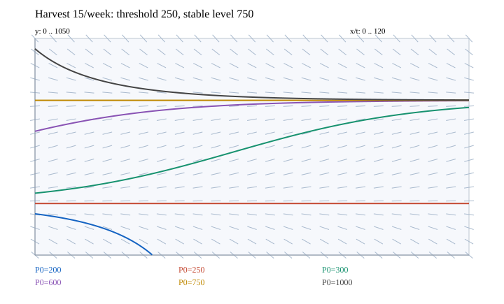
자체 계산 그림. 수치 곡선에는 4차 Runge–Kutta 방법을 사용했다.
힌트. 평형과 변수분리 해를 이용하고 단위를 일치시킨다.
해설.
마지막 항은 매주 열다섯 마리를 제거한다는 뜻이다. \(P^{\prime}=-0.00008(P-250)(P-750)\)이므로 이백오십이 불안정, 칠백오십이 안정 평형이다.
이백오십보다 적으면 감소하여 영에 도달한다. 이백오십과 칠백오십 사이에서는 증가하고, 칠백오십 위에서는 감소하여 칠백오십으로 간다.
\(\frac{P-750}{P-250}=Ae^{-0.04t},\quad A=\frac{P_0-750}{P_0-250}\)를 부분분수로 얻는다.
최종 답. \(P_{200}=\frac{750-2750e^{-0.04t}}{1-11e^{-0.04t}};\quad P_{300}=\frac{750+2250e^{-0.04t}}{1+9e^{-0.04t}};\quad t_{ext}=25\ln(11/3)\approx32.4821\ \mathrm{weeks}\)
검산·주의점. 첫 해는 영에 도달하는 때까지만 인구로 해석한다. 상수해 두 개도 따로 포함한다.
English
Problem summary
For the harvesting model \(P^{\prime}=0.08P(1-P/1000)-15\), find (a) the final term’s meaning, (b) field, (c) equilibria, (d) behavior by initial population, and (e) exact curves from two hundred and three hundred. Time is in weeks.
Original computed figure. Numerical solution curves use fourth-order Runge–Kutta integration.
Hint. Use equilibria and separated solutions, keeping units consistent.
Solution.
The last term removes fifteen fish each week. \(P^{\prime}=-0.00008(P-250)(P-750)\) makes 250 unstable and 750 stable.
Below 250 the population falls to zero. Between 250 and 750 it grows; above 750 it declines toward 750.
\(\frac{P-750}{P-250}=Ae^{-0.04t},\quad A=\frac{P_0-750}{P_0-250}\) follows from partial fractions.
Final answer. \(P_{200}=\frac{750-2750e^{-0.04t}}{1-11e^{-0.04t}};\quad P_{300}=\frac{750+2250e^{-0.04t}}{1+9e^{-0.04t}};\quad t_{ext}=25\ln(11/3)\approx32.4821\ \mathrm{weeks}\)
Check and conditions. The first solution is a population only until it reaches zero. Both constant solutions are included separately.
EXERCISE 20인구 성장 모델Population growth modelsExercise 20 · p. 679 · PDF p. 716개념 보기 · Concept
한국어
문제 요약
\(P^{\prime}=0.08P(1-P/1000)-c,\quad c\ge0\)에서 (a) 여러 어획률의 방향장을 그리고 (b) 평형 존재·멸종 조건, (c) 대수적 증명, (d) 지속 가능한 주간 어획 상한의 의미를 설명하라.
자체 계산 그림. 수치 곡선에는 4차 Runge–Kutta 방법을 사용했다.
힌트. 평형과 변수분리 해를 이용하고 단위를 일치시킨다.
해설.
\(P^{\prime}=20-c-0.00008(P-500)^2\)로 완전제곱한다. 어획률 이십을 넘으면 항상 음수이다.
이십보다 작으면 두 평형 사이에서 증가하고 아래 평형보다 적으면 멸종한다. 이십에서는 오백 이상으로 시작해야 영에 이르지 않는다.
최종 답. \(0\le c\le20:\quad P_\pm=500\pm\sqrt{(20-c)/0.00008};\quad c>20:\ \text{all positive initial populations die out}\); 이십보다 낮게 제한하고 낮은 평형보다 충분히 높은 개체수를 유지해야 한다.
검산·주의점. 이십은 이상화 모델의 최대 지속 생산량이며 모든 초기 개체수를 보호하는 보장은 아니다.
English
Problem summary
For \(P^{\prime}=0.08P(1-P/1000)-c,\quad c\ge0\), (a) plot fields for several harvest rates, (b) classify equilibria and extinction, (c) prove the classification, and (d) explain a sustainable weekly catch limit.
Original computed figure. Numerical solution curves use fourth-order Runge–Kutta integration.
Hint. Use equilibria and separated solutions, keeping units consistent.
Solution.
\(P^{\prime}=20-c-0.00008(P-500)^2\) completes the square. Above twenty the rate is always negative.
Below twenty, growth occurs between the equilibria and populations below the lower threshold die out. At twenty, only populations starting at least five hundred avoid extinction.
Final answer. \(0\le c\le20:\quad P_\pm=500\pm\sqrt{(20-c)/0.00008};\quad c>20:\ \text{all positive initial populations die out}\); keep catch below twenty and the stock safely above the lower equilibrium.
Check and conditions. Twenty is the idealized maximum sustainable yield, not a guarantee for every initial stock.
EXERCISE 21인구 성장 모델Population growth modelsExercise 21 · p. 679 · PDF p. 716개념 보기 · Concept
한국어
문제 요약
최소 생존 개체수 모델 \(P^{\prime}=kP(1-P/M)(1-m/P),\quad0<m<M\)에서 (a) 증감을 보이고 (b) \(k=0.08,M=1000,m=200\)의 방향장·평형·해를 그려라. (c) 일반 초기값 해를 구하고 (d) 최소값 아래의 유한시간 멸종을 증명하라.
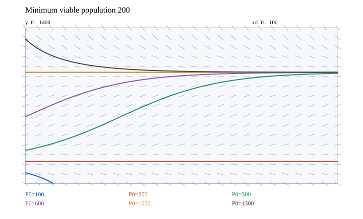
자체 계산 그림. 수치 곡선에는 4차 Runge–Kutta 방법을 사용했다.
힌트. 평형과 변수분리 해를 이용하고 단위를 일치시킨다.
해설.
\(P^{\prime}=\frac kM(M-P)(P-m)\)이므로 두 평형 사이에서 증가하고 최소값 아래에서 감소한다.
\(\lambda=k(M-m)/M,\quad A=(P_0-M)/(P_0-m),\quad(P-M)/(P-m)=Ae^{-\lambda t}\)를 부분분수로 얻는다.
초기 인구가 최소값보다 작으면 분자가 양의 유한 시간에 영이 된다. 최소값보다 크면 최대 수용력으로 수렴한다.
최종 답. \(P=\frac{M-mAe^{-\lambda t}}{1-Ae^{-\lambda t}};\quad P\equiv m,M;\quad t_{ext}=\lambda^{-1}\ln\frac{m(M-P_0)}{M(m-P_0)}\quad(0<P_0<m)\)
검산·주의점. 원래 식은 인구 영에서 정의되지 않으므로 멸종 순간에 모델을 종료한다. 약분식의 음수 연장은 인구 해석이 없다.
English
Problem summary
For the threshold model \(P^{\prime}=kP(1-P/M)(1-m/P),\quad0<m<M\), (a) prove monotonicity; (b) plot the field, equilibria and curves for \(k=0.08,M=1000,m=200\); (c) solve for a general initial population; and (d) prove finite-time extinction below threshold.
Original computed figure. Numerical solution curves use fourth-order Runge–Kutta integration.
Hint. Use equilibria and separated solutions, keeping units consistent.
Solution.
Since \(P^{\prime}=\frac kM(M-P)(P-m)\), populations increase between equilibria and decline below the lower threshold.
\(\lambda=k(M-m)/M,\quad A=(P_0-M)/(P_0-m),\quad(P-M)/(P-m)=Ae^{-\lambda t}\) follows by partial fractions.
Below threshold the numerator reaches zero at a finite positive time. Above threshold the population tends to carrying capacity.
Final answer. \(P=\frac{M-mAe^{-\lambda t}}{1-Ae^{-\lambda t}};\quad P\equiv m,M;\quad t_{ext}=\lambda^{-1}\ln\frac{m(M-P_0)}{M(m-P_0)}\quad(0<P_0<m)\)
Check and conditions. The original equation is undefined at zero population, so the model ends at extinction. A negative extension of the canceled equation has no population interpretation.
EXERCISE 22인구 성장 모델Population growth modelsExercise 22 · p. 679 · PDF p. 716개념 보기 · Concept
한국어
문제 요약
Gompertz 모델 \(P^{\prime}=cP\ln(M/P),\quad P(0)=P_0>0,\ c>0\)에서 (a) 해, (b) 극한, (c) \(M=1000,P_0=100,c=0.05\)의 그래프와 교재 로지스틱 예제 비교, (d) 최대 증가율의 인구를 구하라.
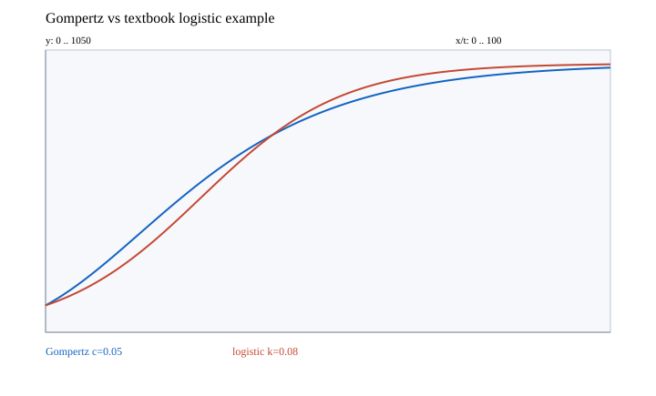
자체 계산 그림. 수치 곡선에는 4차 Runge–Kutta 방법을 사용했다.
힌트. 평형과 변수분리 해를 이용하고 단위를 일치시킨다.
해설.
\(u=\ln(P/M),\quad u^{\prime}=-cu\)를 풀어 초기값을 넣는다.
증가율을 인구로 미분하면 \(c[\ln(M/P)-1]\)이고 영점이 최대점이다. 두 모델 모두 에스자형으로 수용력에 접근하지만 변곡 높이가 다르다.
최종 답. \(P=M\exp[\ln(P_0/M)e^{-ct}],\quad\lim P=M;\quad P_{fast}=M/e\)
검산·주의점. 두 도함수와 초기조건을 직접 검사했다. 비교 로지스틱 예제는 수용력 천, 초기값 백, 성장계수 영점영팔이다.
English
Problem summary
For the Gompertz model \(P^{\prime}=cP\ln(M/P),\quad P(0)=P_0>0,\ c>0\), find (a) the solution, (b) its limit, (c) a plot for \(M=1000,P_0=100,c=0.05\) compared with the textbook logistic example, and (d) the population of maximal growth.
Original computed figure. Numerical solution curves use fourth-order Runge–Kutta integration.
Hint. Use equilibria and separated solutions, keeping units consistent.
Solution.
\(u=\ln(P/M),\quad u^{\prime}=-cu\) is solved and fitted to the initial value.
Differentiating the growth rate in population gives \(c[\ln(M/P)-1]\); its zero is the maximum. Both models approach capacity with sigmoid growth but differ in inflection height.
Final answer. \(P=M\exp[\ln(P_0/M)e^{-ct}],\quad\lim P=M;\quad P_{fast}=M/e\)
Check and conditions. Derivatives and the initial condition check directly. The comparison logistic example has capacity one thousand, initial value one hundred, and coefficient 0.08.
EXERCISE 23인구 성장 모델Population growth modelsExercise 23 · p. 679 · PDF p. 716개념 보기 · Concept
한국어
문제 요약
\(P^{\prime}=kP\cos(rt-\phi),\quad P(0)=P_0>0,\ k,r,\phi>0\)의 (a) 해와 (b) 매개변수별 그래프·장기 극한을 구하라.
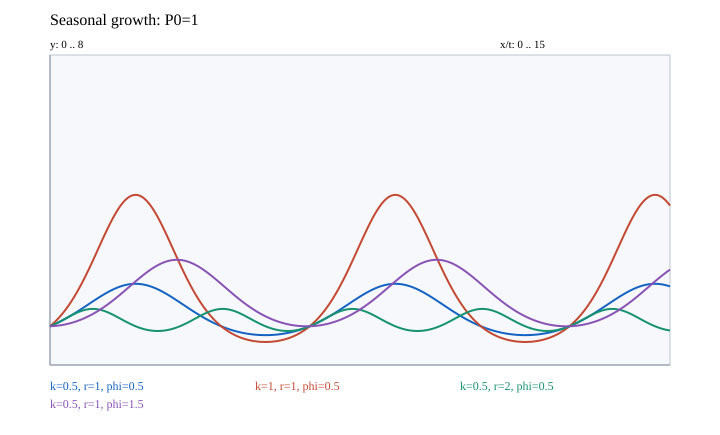
자체 계산 그림. 수치 곡선에는 4차 Runge–Kutta 방법을 사용했다.
힌트. 평형과 변수분리 해를 이용하고 단위를 일치시킨다.
해설.
\(\ln(P/P_0)=\frac kr[\sin(rt-\phi)+\sin\phi]\)을 적분으로 얻는다.
성장계수를 키우면 로그 진폭이 커진다. 주파수를 키우면 주기가 짧아지고 고정 성장계수에서 로그 진폭은 작아진다. 위상은 성장 시기를 옮기며 초기값 고정에 필요한 수직 계수에도 영향을 준다.
최종 답. \(P=P_0\exp\{(k/r)[\sin(rt-\phi)+\sin\phi]\};\quad\mathrm{period}=2\pi/r\); 양의 비상수 주기함수여서 극한은 없다.
검산·주의점. 시간 영을 대입하면 위상항이 소거되어 초기값이 된다.
English
Problem summary
For \(P^{\prime}=kP\cos(rt-\phi),\quad P(0)=P_0>0,\ k,r,\phi>0\), find (a) the solution and (b) parameter-dependent plots and long-time behavior.
Original computed figure. Numerical solution curves use fourth-order Runge–Kutta integration.
Hint. Use equilibria and separated solutions, keeping units consistent.
Solution.
\(\ln(P/P_0)=\frac kr[\sin(rt-\phi)+\sin\phi]\) follows by integration.
Increasing the growth coefficient enlarges log-amplitude. Increasing frequency shortens the period and reduces log-amplitude for fixed growth coefficient. Phase shifts growth timing and affects the scale needed to preserve the initial value.
Final answer. \(P=P_0\exp\{(k/r)[\sin(rt-\phi)+\sin\phi]\};\quad\mathrm{period}=2\pi/r\); the nonconstant positive periodic solution has no limit.
Check and conditions. At time zero the phase terms cancel, recovering the initial value.
EXERCISE 24인구 성장 모델Population growth modelsExercise 24 · p. 679 · PDF p. 716개념 보기 · Concept
한국어
문제 요약
\(P^{\prime}=kP\cos^2(rt-\phi),\quad P(0)=P_0>0,\ k,r,\phi>0\)의 (a) 해, (b) 매개변수 그래프와 장기 거동을 구하라.
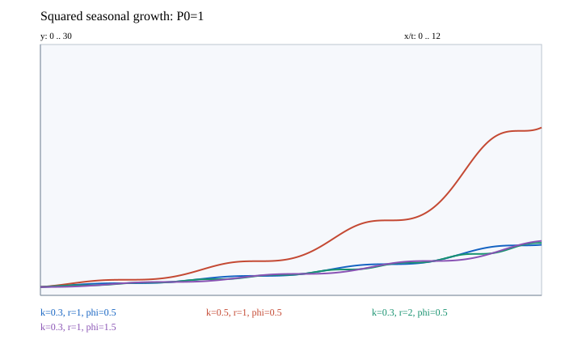
자체 계산 그림. 수치 곡선에는 4차 Runge–Kutta 방법을 사용했다.
힌트. 평형과 변수분리 해를 이용하고 단위를 일치시킨다.
해설.
\(\cos^2u=(1+\cos2u)/2\)를 적분에 쓴다.
로그 성장의 평균은 성장계수의 절반이고 진동항은 유계이다. 성장계수는 평균 증가와 진폭을 함께 키우고 주파수는 주기와 진폭을 줄이며 위상은 완만한 구간의 시기를 바꾼다.
최종 답. \(P=P_0\exp\left[\frac{kt}2+\frac{k}{4r}\{\sin(2rt-2\phi)+\sin2\phi\}\right],\quad\lim_{t\to\infty}P=\infty\)
검산·주의점. 도함수는 항상 음이 아니며 고립된 시점의 수평 접선에도 전체 함수는 엄격히 증가한다.
English
Problem summary
For \(P^{\prime}=kP\cos^2(rt-\phi),\quad P(0)=P_0>0,\ k,r,\phi>0\), find (a) the solution and (b) parameter-dependent plots and long-time behavior.
Original computed figure. Numerical solution curves use fourth-order Runge–Kutta integration.
Hint. Use equilibria and separated solutions, keeping units consistent.
Solution.
\(\cos^2u=(1+\cos2u)/2\) is used in the integral.
Mean logarithmic growth is half the growth coefficient and the oscillatory term is bounded. The growth coefficient increases mean growth and amplitude; frequency reduces period and amplitude; phase changes the timing of flatter portions.
Final answer. \(P=P_0\exp\left[\frac{kt}2+\frac{k}{4r}\{\sin(2rt-2\phi)+\sin2\phi\}\right],\quad\lim_{t\to\infty}P=\infty\)
Check and conditions. The derivative is nonnegative, and despite isolated horizontal tangents the solution is strictly increasing.
EXERCISE 25인구 성장 모델Population growth modelsExercise 25 · p. 679 · PDF p. 716개념 보기 · Concept
한국어
문제 요약
로지스틱 함수 \(P=M/(1+Ae^{-kt}),\quad A>0\)를 평행이동·확대한 쌍곡탄젠트로 표현하라.
힌트. 평형과 변수분리 해를 이용하고 단위를 일치시킨다.
해설.
\(1+\tanh u=2/(1+e^{-2u})\)를 지수 정의에서 얻는다.
\(c=\ln A/k,\quad e^{-k(t-c)}=Ae^{-kt}\)을 넣는다.
최종 답. \(P(t)=\frac M2\left[1+\tanh\left(\frac k2(t-c)\right)\right],\quad c=\frac{\ln A}{k}\)
검산·주의점. 양의 상수 조건은 초기 인구가 양의 수용력보다 작은 에스자 성장 족을 뜻한다.
English
Problem summary
Express the logistic function \(P=M/(1+Ae^{-kt}),\quad A>0\) as a shifted and scaled hyperbolic tangent.
Hint. Use equilibria and separated solutions, keeping units consistent.
Solution.
\(1+\tanh u=2/(1+e^{-2u})\) follows from the exponential definition.
\(c=\ln A/k,\quad e^{-k(t-c)}=Ae^{-kt}\) supplies the shift.
Final answer. \(P(t)=\frac M2\left[1+\tanh\left(\frac k2(t-c)\right)\right],\quad c=\frac{\ln A}{k}\)
Check and conditions. The positive constant describes the sigmoid family starting below positive carrying capacity.